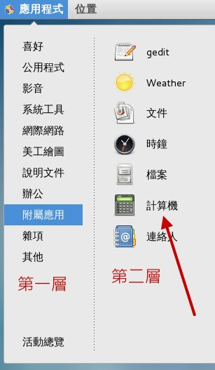
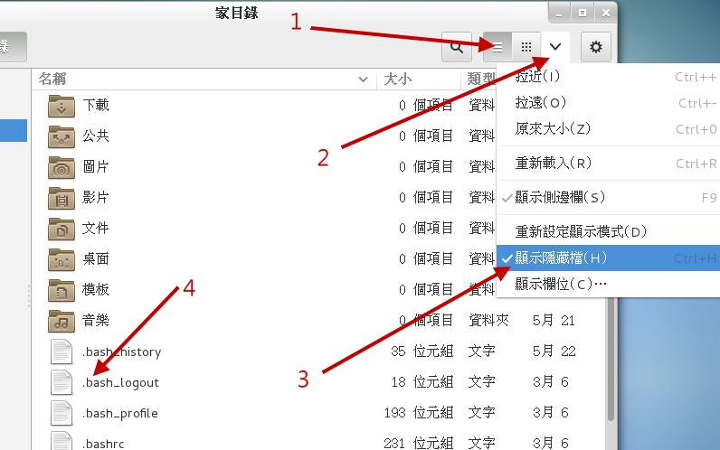
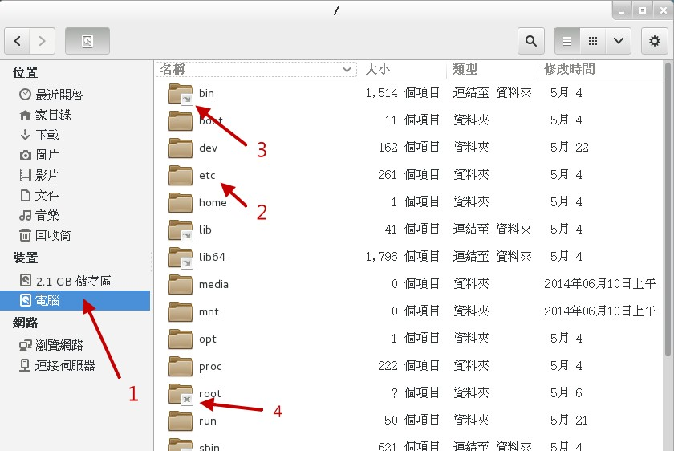
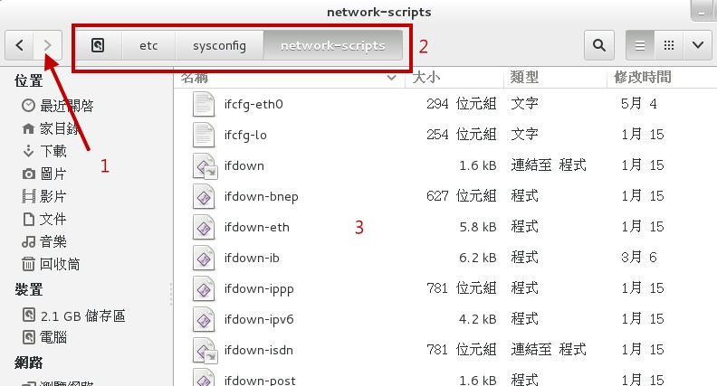

4.1 首次登陆系统
登陆系统有这么难吗？并不难啊！虽然说是这样说，然而很多人第一次登陆Linux的感觉都是“接下来我要干啥？”如果是以图形接口登陆的话，或许还有很多好玩的事物， 但要是以命令行登陆的话，面对着一片黑压压的屏幕，还真不晓得要干嘛呢！为了让大家更了解如何正确的使用Linux， 正确的登陆与离开系统还是需要说明的！
4.1.1 首次登陆CentOS 7.x图形接口
开机就开机呀！怎么还有所谓的登陆与离开呀？不是开机就能够用计算机了吗？ 开什么玩笑，在Linux系统中由于是多用户多任务的环境，所以系统随时都有很多不同的用户所下达的任务在进行， 因此正确的开关机可是很重要的！不正常的关机可能会导致文件系统错乱，造成数据的毁损呢！这也是为什么通常我们的Linux主机都会加挂一个不断电系统啰！
如果在第三章一切都顺利的将CentOS 7.x完成安装并且重新开机后， 应该就会出现如下的等待登陆的图形画面才对。画面中1号箭头显示目前的日期与时间，2号箭头则是辅助功能、语系、音量与关机钮， 3号箭头就是我们可以使用帐号登陆的输入框框，至于4号箭头则是在使用特别的帐号登陆时才会用到的按钮。
 图4.1.1、X等待登陆的画面示意图
图4.1.1、X等待登陆的画面示意图
接下来让我们来了解一下这个登陆画面的相关功能吧！首先，在箭头 1 的地方，如果你动鼠标过去点一下，就会出现如下的窗口， 主要在告诉你日期、日历与时间而已～如下图所示，鸟哥撷取这张图的时间就是在 2015/05/21 早上喔！
 图4.1.2、X等待登陆的画面示意图-日历、时间显示
图4.1.2、X等待登陆的画面示意图-日历、时间显示
然后看一下右上角的角落，你会发现有个小人形图示，那个是协助登陆的无障碍画面处理！如果你的键盘暂时出了点问题，某些按键无法按， 那就可以使用如下画面的“屏幕键盘”的项目，将他 On 一下～那未来有需要在登陆的时候有打字的需求时，屏幕就会出现类似手机要你打字的键盘画面啦！
 图4.1.3、X等待登陆的画面示意图-无障碍登陆协助
图4.1.3、X等待登陆的画面示意图-无障碍登陆协助
有看到那个 zh 嘛？那个是语系的选择～点下去你会看到这部系统支持的语系数据有多少。至于那个类似喇叭的小图示，就是代表着音效的大小声控制～ 而最右边那个有点像是关机的小图示又是干麻的呢？没关系！别紧张！用力点下去看看～就会出现如下图示，其实就是准备要关机的一些功能按钮～ 暂停是进入休眠模式，重新启动就是重新开机啊，关闭电源当然就是关机啰！所以，你不需要登陆系统，也能够通过这个画面来“关机”喔！
 图4.1.4、X等待登陆的画面示意图-无须登陆的关机与重新开机
图4.1.4、X等待登陆的画面示意图-无须登陆的关机与重新开机
接下来看到图4.1.1的地方，图示中的箭头 3,4 指的地方就是可以登陆的帐号！一般来说，能够让你输入帐密的正常帐号， 都会出现在这个画面当中，所以列表的情况可能会非常长！那有些特殊帐号，例如我们在第三章安装过程中，曾经有创建过两个帐号， 一个是 root 一个是 dmtsai，那个 dmtsai 可以列出来没问题，但是 root 因为身份比较特殊，所以就没有被列出来！因此， 如果你想要使用 root 的身份来登陆，就得要点选箭头 4 的地方，然后分别输入帐密即可！
如果是一般可登陆正常使用的帐号，如画面中的 dmtsai 的话，那你就直接点选该帐号，然后输入密码即可开始使用我们的系统了！ 使用 dmtsai 帐号来输入密码的画面示意如下：
 图4.1.5、X等待登陆的画面示意图-一般帐号登陆系统的密码字段
图4.1.5、X等待登陆的画面示意图-一般帐号登陆系统的密码字段
在你输入正确的密码之后，按下“登陆”按钮，就可以进入 Linux 的图形画面中，并开始准备操作系统啰！

Tips 一般来说，我们不建议您直接使用 root 的身份登陆系统喔！请使用一般帐号登陆！等到有需要修改或者是创建系统相关的管理工作时， 才切换身份成为 root！为什么呢？因为系统管理员的权限太高了！而 Linux 下面很多的指令行为是“没有办法复原”的！所以， 使用一般帐号时，“手滑”的灾情会比较不严重！
4.1.2 GNOME的操作与登出
在每一个用户“第一次”以图形接口登陆系统时，系统都会询问使用者的操作环境，以依据使用者的国籍、 语言与区域等制定与系统默认值不同的环境。如下所示，第一个问题就是询问你未来整体的环境要使用的语系为哪个语系与国家？ 当然我们台湾都选汉语台湾啊 （安装的时候选择的默认值），如果有不同的选择，请自行挑选你想要的环境，然后按下“下一步”即可。
 图4.1.6、每个用户第一次登陆系统的环境设置
图4.1.6、每个用户第一次登陆系统的环境设置
再来则是选择输入法，除非你有特殊需求，否则不需要修改设置值。若是需要有其他不同的输入法，请看下图左侧箭头指的“+”符号， 按下它就可以开始选择其他的输入法了。一切顺利的话，请点选“下一步”。
 图4.1.7、每个用户第一次登陆系统的环境设置
图4.1.7、每个用户第一次登陆系统的环境设置
上述的环境选择妥当之后，系统会出现一个确认的画面，然后就出现“入门信息”的类似网页的画面来给你瞧一瞧如何快速入门啰！如下所示。 如果你有需要，请一个一个链接去点选查阅，如果已经知道这是啥东西，也可以如画面箭头处，直接关闭即可！
 图4.1.8、每个用户第一次登陆系统的环境设置
图4.1.8、每个用户第一次登陆系统的环境设置
Tips 要注意喔！上述的画面其实是 GNOME 的求助软件窗口，并不是浏览器窗口！第一次接触到这个画面的学生， 直接在类似网址列的框框中写入 URL 网址，结果当然是找不到数据...当学生问鸟哥时，鸟哥也被唬住了...以为是浏览器...
终于给他看到图形接口啦！真是很开心吧！如下图所示，整个GNOME的窗口大约分为三个部分：
 图4.1.9、窗口接口的环境介绍
图4.1.9、窗口接口的环境介绍
上方工作列（control panel） 上半部左侧有“应用程序”与“位置”，右侧则有“输入法切换”、声音、网络、日期、帐号相关设置切换等，这个位置可以看成是工作列。 举例来说，你可以使用鼠标在 2 号箭头处 （应用程序） 点击一下，就会有更多的程序集出现！然后移动鼠标就能够使用各个软件了。 至于 5 号箭头所指的地方，就是系统时间与声音调整。最右上角则是目前登陆的帐号身份，可以取得很多的设置信息的！
桌面 整个画面中央就是桌面啦！在桌面上默认有两个小按钮，例如箭头 1 所指的地方，常见的就是目前这个帐号的主文件夹，你可以使用鼠标连击两下就能够打开该功能。 另一个则是垃圾桶 （Trash）。如果你的安装光盘没有退出，那么该光盘以及其他可能的可携式 USB 设备，也可能显示在桌面上！ 例如图中的“ CentOS 7 x86_64 ”的光片图示，就是你没有退出的光盘喔！
下方工作列 下方工作列的目的是将各工作显示在这里，可以方便使用者快速的在各个工作间切换喔！另外，我们还有多个可用的虚拟桌面 （Virtual Desktop），就是画面中右下角那个 1/4 的东东！ 该数字代表的意思是，共有 4 个虚拟桌面，目前在第一个的意思。你可以点一下该处，就知道那是啥东西了！
Linux 桌面的使用方法几乎跟 Windows 一模一样，你可以在桌面上按下右键就可以有额外的菜单出现；你也可以直接按下桌面上的“个人数据夹 （home）”， 就会出现类似Windows的“文件资源管理器”的文件/目录管理窗口，里面则出现你自己的主文件夹；下面我们就来谈谈几个在图形接口里面经常使用的功能与特色吧！
Tips 关于“个人数据夹”的内容，记得我们之前说过Linux是多用户多任务的操作系统吧？ 每个人都会有自己的“工作目录”，这个目录是使用者可以完全掌控的， 所以就称为“使用者个人主文件夹”了。一般来说，主文件夹都在/home下面， 以鸟哥这次的登陆为例，我的帐号是 dmtsai，那么我的主文件夹就应该在/home/dmtsai/啰！
- 上方工具列：应用程序 （Applications）
让我们点击一下“应用程序”那个按钮吧！看看下拉式菜单中有什么软件可用！如下图所示。
图4.1.10、应用程序集当中，需要注意有阶层的显示喔！
你要注意的是，这一版的 CentOS 在这个应用程序的设计上，阶层式变化间并没有颜色的区分，左侧也没有深色三角形的示意小图，因此如上图所示，如果你想要打开计算机软件， 那得先在左边第一层先移动到“附属应用”之后，鼠标水平横向移动到右边，才可以点选计算机喔！鸟哥一开始在这里确实容易将鼠标垂直向乱移动，导致老是没办法移动到正确的按钮上！
基本上，这个“应用程序”按钮已经将大部分的软件功能分类了，你可以在里头找到你常用的软件来操作。例如想要使用 Office 的办公室软件， 就到“办公”选项上，就可以看到许多软件存在了！此外，你还会看到最下面有个“活动总览”，那个并没有任何分类的子项目在内，那是啥东西？ 没关系，基本上练习机你怎么玩都没关系！所以，这时就给他点点看啊！会像下面的图示这样：
 图4.1.11、应用程序的总览画面示意图！
图4.1.11、应用程序的总览画面示意图！
画面左侧 1 号箭头处，其实就是类似快速按钮的地方，可以让你快速的选择你所常用的软件。右侧 2 号箭头处，就是刚刚我们上面谈到的虚拟桌面啰！ 共有四个，而目前画面中显示的最是最上面那个一号桌面的意思。如果细看该区块，就会发现其实鸟哥在第三个虚拟桌面当中也有打开几个软件在操作呢！ 有没有发现啊？至于画面中的 3 号箭头处，就是目前这个活动中的虚拟桌面上，拥有的几个启动的软件啰！你可以点选任何你想要的软件，就可以开始操作该软件了！ 所以使用这个“活动总览”，比较可以让你在开好多窗口的环境下，快速的回到你所需要的软件功能中喔！
- 上方工具列：位置 （就是文件资源管理器）
如果你想要知道系统上面还有哪些文件数据，以及你目前这个帐号的基本子目录，那就得要打开文件资源管理器啰 （file manager）！ 打开文件资源管理器很简单，就是选择左上方那个“位置”的按钮项目即可。在这个项目中主要有几个细项可以直接打开目录的内容，主文件夹、下载、图片、影片等等， 其实除了主文件夹之外，下面的次目录“就是主文件夹下的次目录”啦！所以你可以直接打开主文件夹即可！如下所示：
 图4.1.12、文件资源管理器操作示意图
图4.1.12、文件资源管理器操作示意图
如上图所示，1 号箭头处可以让你选择不同的目录或数据来源，2 号箭头则以小图示的方式显示该物件可能是什么数据，3 号箭头则可以将目前的小图示变成详细数据清单， 4 号箭头就是目前小图示的显示模式，5 号箭头可以进行图示数据的放大、缩小、排序方式、是否显示隐藏文件等重要功能！6 号箭头则是其他额外的功能项目！ 好了，线再让我们来操作一下这个软件吧！如果你想要观察每个文件名的详细数据，并且显示“隐藏文件”的话，那该如何处理呢？如下图所示的方式处理一下：
图4.1.13、文件资源管理器操作示意图
按照上面的三个步骤点选完毕后，你就会看到如 4 号箭头处指的，有一些额外的文件名跑出来了！而且，这些跑出来的文件名共同的特色就是“文件名前面开头是小数点 . ” 没错！你答对了～只要文件名的开头是由小数点开始的，那么该文件名就不会在一般观察模式被显示出来！所以说，在 Linux 下面，隐藏文件并不是什么特殊的权限， 单纯是因为文件名命名的处理方式来搞定的！这样理解否？
如果你想要观察系统有多少不同的文件系统呢？那就看一下文件资源管理器左侧“设备”的项目下，有几个项目就是有几个设备啰！现在让我们来观察一下“计算机”内有什么数据吧！ 请按下他！然后观察一下如下的图示：
图4.1.14、文件资源管理器操作示意图
如上图所示，点下 1 号箭头后，右边就出现一堆目录数据夹。注意看， 2 号箭头处指的是正常的一般目录， 3 号箭头则指的是有“链接文件”的数据， 这个链接文件可以想像成 Windows 的“捷径”功能就是了～如果你的帐号没有权限进入该目录时，该目录就会出现一个 X 的符号，如同 4 号箭头处！很清楚吧！ 好！让我们来观察一下有没有 /etc -> sysconfig -> network-scripts 这个目录下的数据呢？
图4.1.15、文件资源管理器操作示意图
如果你可以依序双击每个正确的目录，就可以得到如上图示。画面中的 1 号箭头处，可以让你“回到上一个画面”中，不是回到上一层～而是“上一个画面”喔！ 这点要注意。至于 2 号区块处，你可以发现有不同颜色的显示，最右边的是目前所在目录，所以 3 号画面就显示该目录下的文件信息。 你可以快速的点选 2 号区块处的任何一个目录，就可以快速的回到该层目录中去查看文件数据喔！
- 中文输入法与设置
如果你在安装的时候就选定中文，并且有处理过切换中/英文的快速键，那这个项目几乎可以不用理他了！但是如果你都使用默认值来安装时， 可能会发生没办法使用惯用的“ctrl+shift”或“ctrl+space”来切换中文的问题！同时，也可能没办法找到你想要的中文输入法～那怎办？没关系， 请使用图4.1.9画面中右上角的帐号名称处点一下，然后选择“设置值”，或者从“应用程序”、“系统工具”、“设置值”也可以打开它！ 之后选择“地区和语言”项目，就可以得到如下画面。
 图4.1.16、地区与语言设置项目
图4.1.16、地区与语言设置项目
在上面的画面中，你可以按下箭头所指的地方，就可以增加或减少输入法的项目了。但是，如果想要切换不同的语言呢？那请回到原本的设置画面， 之后请选择“键盘”的项目，并按下“快捷键”，出现如下的画面，点选在画面中的左侧“输入”项目，并在“切换到下一个输入来源”点选一、两下， 等到出现如 3 号箭头处出现“新捷径键”时，按下你所需要的组合键，例如鸟哥习惯按“crtl + space”，那就自己按下组合键， 之后你就可以使用自己习惯的输入法切换快速键，来变更你所需要的输入法啰！
 图4.1.17、输入法切换之快捷键设置
图4.1.17、输入法切换之快捷键设置
- 一些常见的练习
下面的例题请大家自行参考并且实作一下喔！题目很简单，所以鸟哥就不额外抓图了！
- 由“设置值”的“显示器”项目中，确认一下目前的分辨率，并且尝试自己变更一下屏幕分辨率；
- 由“设置值”的“背景”项目中，修改一下桌面的背景图示：
- 由“设置值”的“电源”项目中，修改一下进入空白屏幕锁定的时间，将它改成“永不”的设置值；
- 由“应用程序”的“公用程序”项目下的“调校工具”中，使用“Shell”功能内的“动态工作区”项目，将原本的 4 个虚拟桌面， 更改成 6 个虚拟桌面看看；
- 由“应用程序”的“公用程序”项目下的“调校工具”中，使用“输入”项目，并选择“砍除 X 服务器的按键序列”从“已停用”改成“Control+Alt+退格键”的设置， 这可以让你按下三个按钮就能够重新启动 X 窗口管理员；
- 请将/etc/crontab这个文件“复制”到你的主文件夹中；
- 从“应用程序”的“附属应用”点选“gedit”编辑器，按下 gedit 的“打开”按钮，选择“主文件夹（就是你的帐号名称）”后，点选刚刚复制过来的 crontab 文件名。 在画面中随意使用中文输入法输入几个字，然后储存离开看看！
- 从“应用程序”的“喜好”当中打开“终端机”，在终端机中输入“gsettings set org.gnome.desktop.interface enable-animations false”， 这个动作会将 GNOME 默认的画面切换的动画功能关闭，在虚拟机的环境下，有助于画面切换的速度喔！
上述的练习中，第三个练习还挺重要的！因为在默认的状态中，你的图形接口会在 5 分钟后自动的被锁定！这是为了要避免你暂时离开座位， 有人偷偷使用你的计算机的缘故。而要解开锁定，就得要输入你这个帐号的密码才行。这个功能最好是不要取消。但因为我们的系统是单纯的练习机， 而且又是虚拟机，如果经常锁定屏幕，老是要解开很烦～那就使用上述的 3 号练习题，应该可以处理完毕！ 至于第 8 点对于初次接触 Linux 的朋友来说，会有点困难，如果你不知道如何下达指令，没关系～等到本章后面的小节读完，你就知道如何处理了！
- 登出 GNOME、重新启动 X 窗口管理员或关机
如果你没有想要继续玩X Window了，那就登出吧！如果不想要继续操作系统了，那就关机吧！如何登出/关机呢？如下图所示，点选右上角你的帐号名称， 然后在出现的画面中去选择即可。要记得的是，登出前最好将所有不需要的程序都关闭了再登出或关机啊！
 图4.1.18、离开窗口接口或 Linux 的方式：有登出、锁定与关机
图4.1.18、离开窗口接口或 Linux 的方式：有登出、锁定与关机
不论是登出还是关闭电源（关机），都会有一个警告窗口来告知你 60 秒内没有任何动作的话，就会被登出了！如下图所示。当然， 你也可以按下确定来进行动作。登出后，系统画面又会回到原本的等待登陆的画面中了！
 图4.1.19、离开窗口接口或 Linux 的方式：登出提醒
图4.1.19、离开窗口接口或 Linux 的方式：登出提醒
请注意喔，登出并不是关机！只是让你的帐号离开系统而已喔！
- 重新启动X Window的快速按钮
一般来说，我们是可以手动来直接修改X Window的配置文件的，不过，修改完成之后的设置项目并不会立刻被载入， 必须要重新启动X才行（特别注意，不是重新开机，而是重新启动X！） 。那么如何重新启动X呢？ 最简单的方法就是：
- 直接登出，然后再重新登陆即可；
- 在X的画面中直接按下[Alt] + [Ctrl] + [Backspace]
第二个方法比较有趣，[backspace]是倒退键，你按下三个按钮后X Window立刻会被重新启动。 如果你的X Window因为不明原因导致有点问题时，也可以利用这个方法来重新启动X喔！不过， 这个方法要生效，必须要先进行本节稍早之前的练习第五题才行呦！
4.1.3 X window与文字模式的切换
我们前面一直谈到的是X Window的窗口管理员环境，那么在这里面有没有纯命令行的环境啊？因为听说服务器通常是纯命令行的啊！ 当然有啊！但是，要怎么切换X Window与文字模式呢？注意喔，通常我们也称文字模式为终端机接口, terminal 或 console喔！Linux默认的情况下会提供六个Terminal来让使用者登陆， 切换的方式为使用：[Ctrl] + [Alt] + [F1]~[F6]的组合按钮。
那这六个终端接口如何命名呢，系统会将[F1] ~ [F6]命名为tty1 ~ tty6的操作接口环境。 也就是说，当你按下[crtl] + [Alt] + [F1]这三个组合按钮时 （按着[ctrl]与[Alt]不放，再按下[F1]功能键）， 就会进入到tty1的terminal接口中了。同样的[F2]就是tty2啰！那么如何回到刚刚的X窗口接口呢？很简单啊！按下[Ctrl] + [Alt] + [F1]就可以了！我们整理一下登陆的环境如下：
- [Ctrl] + [Alt] + [F2] ~ [F6] ：命令行登陆 tty2 ~ tty6 终端机；
- [Ctrl] + [Alt] + [F1] ：图形接口桌面。
由于系统默认的登陆界面不同，因此你想要进入 X 的终端机名称也可能会有些许差异。以 CentOS 7 为例，由于我们这次安装的练习机， 默认是启动图形界面的，因此这个 X 窗口将会出现在 tty1 界面中。如果你的 Linux 默认使用纯命令行，那么 tty1~tty6 就会被文字界面占用。
Tips 在 CentOS 7 环境下，当开机完成之后，默认系统只会提供给你一个 tty 而已，因此无论是文字界面还是图形界面，都是会出现在 tty1 喔！ tty2~tty6 其实一开始是不存在的！但是当你要切换时 （按下 [ctrl]+[alt]+[F2]），系统才产生出额外的 tty2, tty3...
若你在纯文本环境中启动 X 窗口，那么图形界面就会出现在当时的那个 tty 上面。举例来说，你在 tty3 登陆系统，然后输入 startx 启动个人的图形界面， 那么这个图形界面就会产生在 tty3 上面！这样说可以理解吗？
# 纯命令行下 （不能有 X 存在） 启动窗口界面的作法
[dmtsai@study ~]$ startx
不过startx这个指令并非万灵丹，你要让startx生效至少需要下面这几件事情的配合：
- 并没有其他的 X window 被启用；
- 你必须要已经安装了X Window system，并且X server是能够顺利启动的；
- 你最好要有窗口管理员，例如GNOME/KDE或者是阳春的TWM等；
其实，所谓的窗口环境，就是：“文字界面加上 X 窗口软件”的组合！因此，文字界面是一定会存在的，只是窗口界面软件就看你要不要启动而已。 所以，我们才有办法在纯文本环境下启动一个个人化的 X 窗口啊！因为这个 startx 是任何人都可以执行的喔！并不一定需要管理员身份的。 所以，是否默认要使用图形界面，只要在后续管理服务的程序中，将“ graphical.target ”这个目标服务设置为默认，就能够默认使用图形界面啰！
Tips 从这一版 CentOS 7 开始，已经取消了使用多年的 SystemV 的服务管理方式，也就是说，从这一版开始，已经没有所谓的“执行等级 （run level） ”的概念了！ 新的管理方法使用的是 systemd 的模式，这个模式将很多的服务进行相依性管理。以文字与图形界面为例，就是要不要加入图形软件的服务启动而已～ 对于熟悉之前 CentOS 6.x 版本的老家伙们，要重新摸一摸 systemd 这个方式喔！因为不再有 /etc/inittab 啰！注意注意！
4.1.4 在终端接口登陆linux
刚刚你如果有按下[Ctrl] + [Alt] + [F2]就可以来到tty2的登陆画面，而如果你并没有启用图形窗口界面的话， 那么默认就是会来到tty1这个环境中。这个纯文本环境的登陆的画面 （鸟哥用 dmtsai 帐号当入） 有点像这样：
CentOS Linux 7 （Core）
Kernel 3.10.0-229.el7.x86_64 on an x86_64
study login: dmtsai
Password: <==这里输入你的密码
Last login: Fri May 29 11:55:05 on tty1 <==上次登陆的情况
[dmtsai@study ~]$ _ <==光标闪烁，等待你的指令输入
上面显示的内容是这样的：
CentOS Linux 7 （Core）： 显示Linux distribution的名称（CentOS）与版本（7）；
Kernel 3.10.0-229.el7.x86_64 on an x86_64： 显示 Linux 核心的版本为3.10.0-229.el7.x86_64， 且目前这部主机的硬件等级为x86_64。
study login:： 那个study是你的主机名称。我们在第三章安装时有填写主机名称为： study.centos.vbird，主机名称的显示通常只取第一个小数点前的字母，所以就成为study啦！至于login:则是一支可以让我们登陆的程序。 你可以在login:后面输入你的帐号。以鸟哥为例，我输入的就是第三章创建的dmtsai那个帐号啦！ 当然啰，你也可以使用root这个帐号来登陆的。不过“root”这个帐号代表在Linux系统下无穷的权力， 所以尽量不要使用root帐号来登陆啦！
Password:： 这一行则在第三行的dmtai输入后才会出现，要你输入密码啰！ 请注意，在输入密码的时候，屏幕上面“不会显示任何的字样！”， 所以不要以为你的键盘坏掉去！很多初学者一开始到这里都会拼命的问！啊我的键盘怎么不能用...
Last login: Fri May 29 11:55:05 on tty1： 当使用者登陆系统后，系统会列出上一次这个帐号登陆系统的时间与终端机名称！ 建议大家还是得要看看这个信息，是否真的是自己的登陆所致喔！
[dmtsai@study ~]$ _： 这一行则是正确登陆之后才显示的讯息， 最左边的 dmtsai 显示的是“目前使用者的帐号”，而@之后接的 study 则是“主机名称”，至于最右边的~则指的是 “目前所在的目录”，那个$则是我们常常讲的“提示字符”啦！
Tips 那个 ~ 符号代表的是“使用者的主文件夹”的意思，他是个“变量！” 这相关的意义我们会在后续的章节依序介绍到。举例来说，root的主文件夹在/root， 所以 ~ 就代表/root的意思。而dmtsai的主文件夹在/home/dmtsai， 所以如果你以dmtsai登陆时，他看到的 ~ 就会等于/home/dmtsai喔！
至于提示字符方面，在Linux当中，默认root的提示字符为 # ，而一般身份使用者的提示字符为 $ 。
还有，上面的第一、第二行的内容其实是来自于/etc/issue这个文件喔！
好了这样就是登陆主机了！很快乐吧！耶～
另外，再次强调，在Linux系统下最好常使用一般帐号来登陆即可，所以上例中鸟哥是以自己的帐号dmtsai来登陆的。 因为系统管理员帐号（root）具有无穷大的权力，例如他可以删除任何一个文件或目录。因此若你以root身份登陆Linux系统， 一个不小心下错指令，这个时候可不是“欲哭无泪”就能够解决的了问题的～
因此，一个称职的网络/系统管理人员，通常都会具有两个帐号，平时以自己的一般帐号来使用Linux主机的任何资源， 有需要动用到系统功能修订时，才会转换身份成为root呢！所以，鸟哥强烈建议你创建一个普通的帐号来供自己平时使用喔！ 更详细的帐号讯息，我们会在后续的“第十三章帐号管理”再次提及！ 这里先有概念即可！
那么如何离开系统呢？其实应该说“登出Linux”才对！登出很简单，直接这样做：
[dmtsai@study ~]$ exit
就能够登出Linux了。但是请注意：“离开系统并不是关机！” 基本上，Linux本身已经有相当多的工作在进行，你的登陆也仅是其中的一个“工作”而已， 所以当你离开时，这次这个登陆的工作就停止了，但此时Linux其他的工作是还是继续在进行的！ 本章后面我们再来提如何正确的关机，这里先创建起这个概念即可！